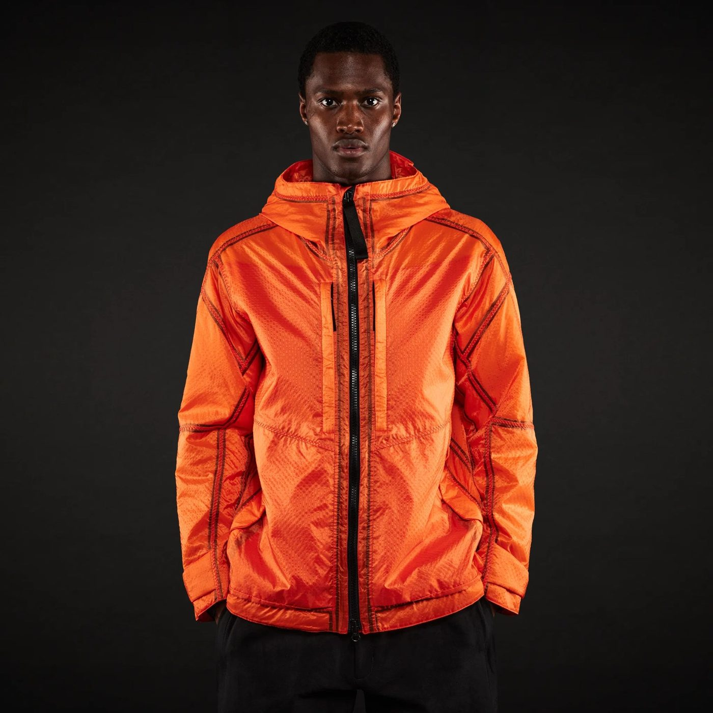
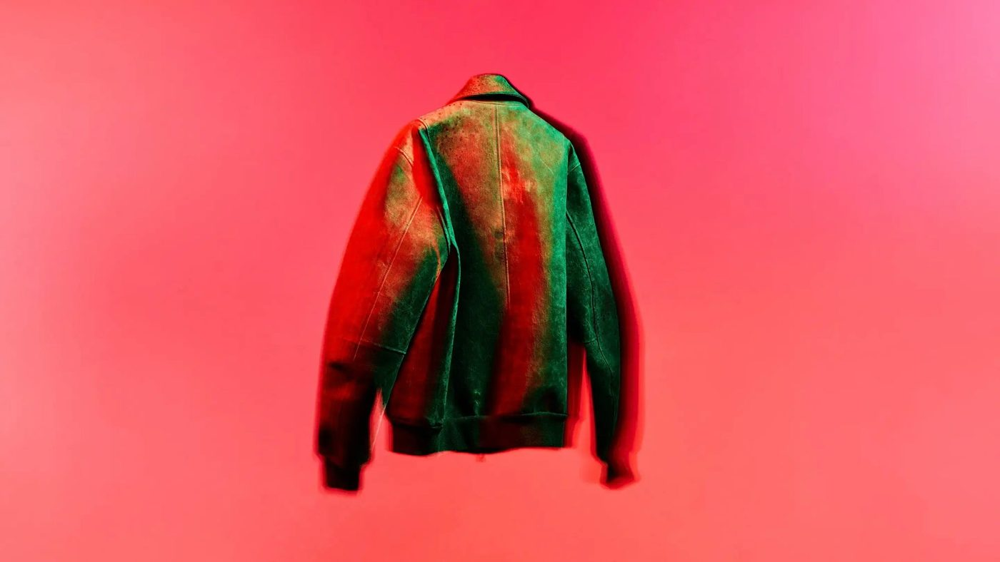
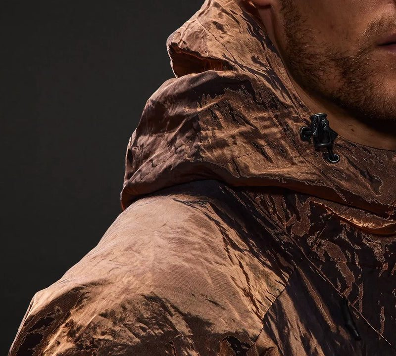
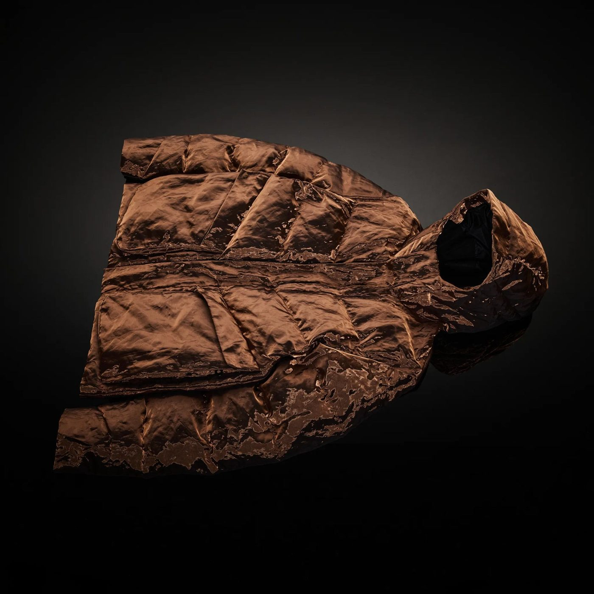
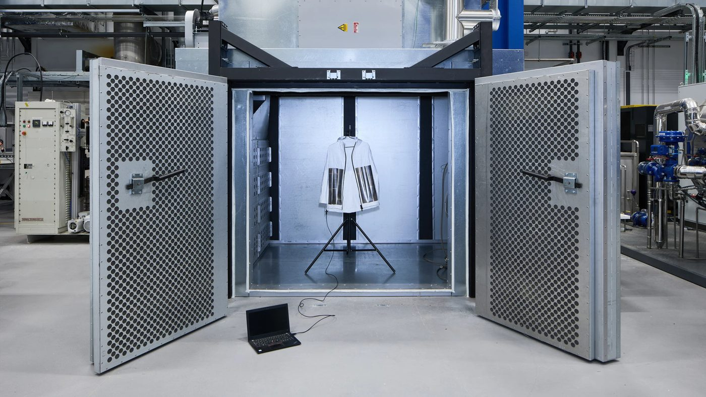
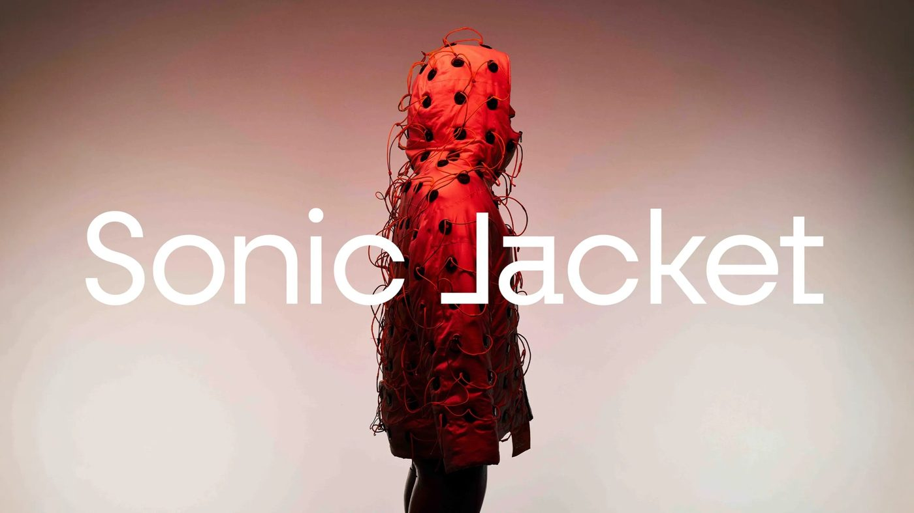

Vollebak
Company study · 2026-11-16
Dark studio, hard material light, one garment at a time. Vollebak shows clothing as engineered hardware: crinkled metal fabric, space-grade shells and lab test rigs on near-black grounds, with bright flat colors (orange, red) used as signal. The positioning is technical and slightly otherworldly, premium without luxury styling.
 (01)
(01)


(02)

(03)

(04)

(05)

(06)

(07)Palette · measured from images
#12100F#CDCACA#331E14#573828#885E46#FE6370Visual themes
- Material as hero
- Key motifs: crushed, crinkled metal fabric catching hard light; three-quarter portrait with the head turned off axis. Sub motifs: copper, silver and gold editions of one pattern; visible seam tape and storm flaps.
- Space and extreme environments
- Key motifs: Mars, Titan, parachute shell, aerogel, a prototype craft (Spaceshop). Sub motifs: mission-style naming (Martian Mach 16, Rover Orange); a jacket shown beside lab and test equipment.
- Lab, rig and process
- Key motifs: chamber with open doors, workshop fitting. Sub motifs: industrial gray, matte metal.
- Flat color object
- Key motifs: a single garment floating on a saturated ground (red, pink). Sub motifs: symmetric front view, no model.
Hero material
The Full Metal Jacket shell is a three-layer Schoeller fabric, 59.5% copper, 20% polyurethane, 20% polyamide, 0.5% other metals, with a c_change membrane, made in Switzerland; the maker states 11 km of copper and a 6-day cure (https://vollebak.com/en-us/products/full-metal-jacket-copper-edition, retrieved 2026-11-16).
The crinkled metallic surface is the recognizable image: it breaks light into dark and bright planes, so the garment reads as sculpture before it reads as clothing. Close-up at (04).
Visual elements
- Photography
- Low-key studio lighting, one hard source from the side, near-black ground, tight 3/4 portraits; campaign and event images are documentary and wide.
- Type and graphics
- Light-weight sans wordmark (observed in the Sonic Jacket image); little ornament; product names carry the story.
- Layout habits
- One large image per block, copy in short statements, price and spec lists below the image; square product crops.
- Detail
- Black seam tape, zigzag stitching on the aerogel jacket (the maker cites early Project Mercury spacesuits), metal snaps and two-way metal zippers.
Visual story
A claim (clothes for the next century, not the next season), the founders’ origin as endurance runners, the Spaceshop launch film, the material section (NASA and nature), a history of past products, and the Spaceshop launch of June 2025. Product pages repeat it: hero image, one-line claim, key facts, technical details, then the material story in two parts.
Science first, product second; each page argues that the material has a reason to exist.
Notable products
- Full Metal Jacket
- The copper fabric carries the whole look; five metal colors share one cut.
- Martian Aerogel Jacket
- Parachute-nylon shell (67 g/m², about 2 oz/yd²) over laser-drilled aerogel: a translucent shell as a window to the insulation, in bright Rover Orange.
Method and limits
- Palette basis
- Board images (01), (02), (03), (05), (06), (07) plus four more product images from the same pages (Mach 16 orange jacket, silver, gold and puffer editions); six clusters kept after dropping near-duplicates
- Limits
- Mood images were graded to the house look, so on-board color differs slightly from the source; palette values come from the ungraded originals.
Credits and licenses
(01) Full Metal Jacket, copper edition, studio portrait. Vollebak. Brand image, study use. source
(02) Martian Aerogel Jacket, Rover Orange edition. Vollebak. Brand image, study use. source
(03) Mycelium jacket on red ground, campaign image. Vollebak. Brand image, study use. source
(04) Close-up crop of the copper fabric surface, cropped from image (01). Vollebak. Brand image, study use. source
(05) Full Metal Jacket, copper edition, flat lay. Vollebak. Brand image, study use. source
(06) Industrial chamber with open doors (site file name Oven-0073). Vollebak. Brand image, study use. source
(07) Sonic Jacket campaign image with wordmark type. Vollebak. Brand image, study use. source